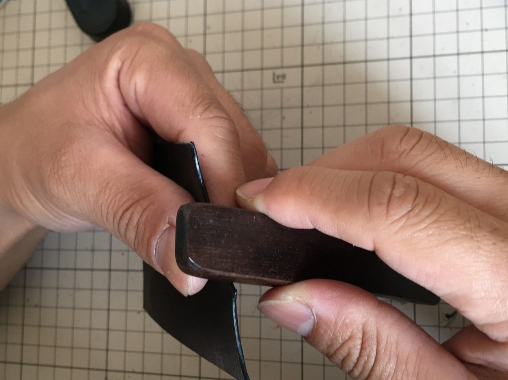

| LEATHR CRAFT MASTER BOOK (AGR publishing store) | |
| Kuu.. | |
| (2019) | |
LEATHER CRAFT
MASTER BOOK
Kuu..
内容
はじめに
以前よりもレザークラフトというものが身近になってきました。
私が始めた頃は、ネット上でも情報があまり出回っておらず、参考書も読んだだけでは内容が理解しづらいものしかないように感じました。
最近では、レザークラフト教室などもあり手軽に始められる環境になってきているように感じますが、なかなか一歩を踏み出せずにいる方も多いと思います。
そこで、私が誰でも簡単に、初心者の方でも綺麗に仕上げられるようポイントを押さえて技術を紹介したいと思います。
簡単なカードケースの作成方法を例に紹介していきますので、どうぞよろしくお願いします！
仕上がりはこのようになります。さあチャレンジしてみましょう！
工具紹介
本書では、カードケースの作成方法を紹介していきますが、まずは工具の紹介をしていきたいと思います。
左上から順に
ライター・・・手縫糸を焼いて止めるために使用します。
爪楊枝・・・張り合わせ用のボンドを塗布するために使用します。これを使用することで細かい部分に綺麗に塗布することが出来ます。
アルミホイル・・・接着剤をこの上に出します。使用後にまとめて捨てられるので便利です
型紙・・・文房具店で購入出来る、厚手の方眼紙を使用して作成すると繰り返し使用できます。
手縫い糸・・・今回はビニモ０番を使用します。お好みに合わせて糸の太さは変更して下さい。化学繊維の糸だと、ライターで焼き止め出来ます。
トコノール・・・コバ（革の合わせ面の切り口）や革の裏面の毛羽立ちを抑えるのに使用します。ワックスの含まれない無色透明の物が艶を出し易くお勧めです。
蝋引きワックス・・・今回は菱目打ちを刺して、革の抜けを良くするために使用します。
菱目打ち・・・今回は5ｍｍピッチの物を、１本目、２本目、６本目の３種類使用します。
ハンマーで打って縫い穴を開けるために使用します。
手縫い針・・・菱目打ちで空けた穴に通して、糸を縫って行くのに使用します。先が尖っていない物の方が革を傷つけにくいです。
糸切ハサミ・・・縫い糸を切る為に使用します。切れ味が良いので、切断面が綺麗になり針に通しやすくなります。
ボールペン・・・革の裏面に型を引く為に使用します。0.7ｍｍの物が裁断するときに線を確認し易いためお勧めです。
ロータリーカッター・・・直線の裁断はこの工具で行います。手前から奥側へ押し付けながら裁断するので、薄い革、厚い革どちらでも安定して裁断することが出来ます。また、切れ味が低下したら簡単に替え刃に交換出来るので経済的です。
張り合わせ用ボンド・・・速乾性の皮革用ボンドを使用します。革の銀面に付いてしまっても、爪楊枝で簡単にとることが出来るのでお勧めです。
ゴム板・・・この上に革を置いて、菱目打ちで縫い穴を空けます。
デザインナイフ・・・カーブなど直線で裁断出来ない部分の裁断に使用します。こちらも替え刃式なので切れ味が低下したら交換することが出来ます。
染料・・・ヌメ皮に着色したい場合に使用します。一枚皮で各色揃えるのは大変なので、作る物に応じて染料を用意しておくと便利です。
ウッドスリッカー・・・トコノールを塗ったコバを磨いて艶を出す為に使用します。
ヘリ落とし・・・コバの合わせ面を面取りするのに使用します。
ウッドブロック・・・トコノールを塗った床面を磨いて仕上げる為に使用します。
ネジ捻・・・縫い穴を開けるガイドラインを引く為に使用します。
木ハンマー・・・菱目打ちを叩いて縫い穴を開ける為に使用します。
裁断用線引き
それでは実際に作業に入って行きましょう。
まずは裁断用の線を引く為にベースとなる型紙を製作しましょう。と言っても、今回製作するカードケースは、型紙２枚製作するだけですのでとても簡単です。
まず文房具店などで厚手の方眼紙を購入します。もし、方眼紙が用意出来なければ画用紙でもいいでしょう。そして、80ｍｍ×65ｍｍ、95ｍｍ×65ｍｍの２枚の型紙を作成します。
これらはカッターナイフで直線的に切り出すだけなので、特に問題はないと思います。
本書の製作例のように、デザインを入れたければアレンジしてみると面白いと思います。
線引きをする前に、もう１つ確認しておかなければならないことがあります。それは革の繊維の方向です。半裁で革を購入した場合は、ショルダー、ベンズ、ベリーなど部位が確認出来るので、ショルダー、ベンズは水平方向へ伸びやすい、ベリーは垂直方向へ伸びやすいと言うのが分かり易いのですが、初心者の方が端切れを購入して製作しようとした時に、どの部位なのかが分からないことがあります。そういう時は、革の端の方を裁断して、切れ端を思いきり引っ張って確認してみましょう。今回のカードケースの場合は、伸びやすい方向を縦側にしておくと、繰り返しカードを出し入れしても型崩れが起きにくく、長期の使用に耐えられるアイテムになります。
まず革の裏側を上に向けて、型紙を革の上に置きます。そして型紙がずれない様にしっかりと押さえておきます。そして、ボールペンで型紙に沿って線を引きます。0.7ｍｍのボールペンを使用すると引いた線が確認し易くなります。
線を引き終わった物がこのようになります。
0.7ｍｍのボールペンで線を引くとこのようになります。
どうでしょう？くっきりと線が引けて見やすくなっていると思います。
写真では表パーツが２枚になっていますが実際には１枚で構いません。
裁断
先ほどの線引きが終わった物を裁断して行きましょう。
図のように、定規を線の内側ギリギリの所に置き固定します。そしてロータリーカッターの刃が革に対して垂直になるようにしっかりと持ち、手前から奥へ定規に沿わせて裁断します。
定規を線の外側へ置いて裁断してしまうと、型紙よりサイズの大きいパーツが出来てしまうので注意してください。ロータリーカッターの刃が斜めに入ってしまうと、張り合わせたときの修正作業が必要になりますので、こちらも注意してください。
次にデザインナイフを使用した、カーブの裁断方法を説明します。
こちらも先ほどのロータリーカッター同様、刃先が革に対して斜めにならないよう気を付けて下さい。
デザインナイフの使い方ですが、小指の先端外側を机に固定し、ペンを持つのと同じ持ち方で作業すれば安定してカーブを裁断できます。
こちらの作業の場合も裁断線内側ギリギリを狙って裁断して下さい。
写真のように３つのパーツを切り出します。
床面仕上げ
それでは床面の仕上げをして行きましょう。まずトコノールを適量指で取り、床面に塗り込んで行きます。
この時に気を付けないといけないのがトコノールのはみ出しです。塗りすぎではみ出してしまうと、革の銀面（表面）に付いてしまいます。１度銀面に付いてしまった物を拭き取っても、シミが残ってしまい跡が消えないので注意してください。
写真のようにキワの部分ははみ出さないようにするのがポイントです。
全体にトコノールを塗布出来たら、ウッドブロックを使用して磨き込みます。水分が飛んで艶が出るまで磨き込んで下さい。トコノールの塗布量が少ないとムラになってしまいますので注意してください。
写真のように、全体に艶が出るまで磨き込んで下さい。
ヘリ落とし
カード差し込み部分のコバのヘリ落とし作業に入って行きたいと思います。
切り出したパーツの断面は角が立っています。これを表面、裏面共に角を落とすことで、丸みのある綺麗なコバに仕上げることが出来ます。
まずは裏面からヘリ落とし作業をしていきます。先に銀面側の方から始めてしまうと、裏面を作業するときに、ヘリ落としの刃が引っ掛かりやすく,断面が均一にならなくなるので注意して下さい。

写真のように、ヘリ落とし先端下側を作業台に押し当てながら、刃先の角度を一定に保つことで綺麗な断面に仕上げることが出来ます。
コバ仕上げ
それではカード差し込み部のコバ仕上げ作業に入って行きましょう。
まずはコバ全体にトコノールを塗布していきます。色々なやり方がありますが、ここでは指で直接塗布する方法を紹介したいと思います。
まず中指先端の腹部分に少量のトコノールを取ります。次に腹のトコノールの付いていない部分を革に当て、コバにトコノールが触れるようにして、奥から手前に指を引いて塗布していきます。
写真のような作業になります。少し分かり難いかもしれませんが、こうすることではみだしを抑え綺麗に塗布することが出来ます。
手に残ったトコノールは綺麗に拭き取るようにして下さい。少しでも残っていると、銀面に付着してシミになってしまうので注意してください。
次にコバの磨き作業をして行きましょう。ウッドスリッカーを持ち溝に革を入れ、前後に往復させながら磨いて行きます。
表パーツのように、薄い革の場合はウッドスリッカーの角度を付けずに、革に対してウッドスリッカーの接触面積が広く接触するようにすると、形が崩れず綺麗に仕上がります。
ヘリを落としてコバ全体が丸みを帯びていますので、角度を変えながら磨きましょう。

写真のように艶が出てくるまで磨き込みます。艶が出にくい場合は、再度トコノールを塗布して磨き直しましょう。
革漉き
それでは裏パーツの張り合わせ部分の革漉き作業に入って行きましょう。
この作業を行うことによって、縫い合わせ部分に膨らみが出て高級感を出すことが出来ます。
本来、革包丁などを用いて作業を行いますが、ここでは魚の目削りを用いた作業を紹介したいと思います。魚の目削りはホームセンターなどではあまり見かけませんが、ネット通販で簡単に手に入りますので購入してみて下さい。
まず、魚の目削りの刃部を革の縁に当て、一定の力で奥から手前に引きます。力を入れすぎると深く削りすぎてしまうので注意して下さい。
写真のように５ｍｍ幅くらいで削るのがベストです。端切れなどで練習して一定の力で削れるようにしてみて下さい。
写真のように裏パーツ２枚の縁を全周漉きます。
張り合わせ
それでは各パーツの張り合わせ作業に入って行きましょう。まずは裏パーツの張り合わせ作業から始めます。
写真のように、ヤスリで全体を荒らしておきます。この作業を行うことによって、接着した際に繊維同士が絡み合って剥がれ難くなります。
次に荒らした2つの裏パーツにボンドを塗布して行きます。
まずは、アルミホイルの上に適量ボンドを出します。次に爪楊枝を使って全体にボンドを薄く延ばしていきます。
刷毛を使うと、縁の部分に綺麗にボンドを塗布出来ないので爪楊枝を使用して全体にまんべんなく塗っていきます。特に縁部分は塗り残しがあると剥がれの原因になるので、しっかりと縫っておいてください。
写真のように裏パーツの裏側全面にまんべんなく塗り込んで下さい。
次に裏パーツ同士を張り合わせます。この時、注意するのが張り合わせのズレです。
木工用ボンドと違い、塗布初期の接着力が強いため圧着してしまうと修正が効きませんので、どこか１辺を基準にして軽く触れる程度で合わせて下さい。その時ズレがあった場合は、そっと剥がしてもう1度やり直します。良ければしっかりと圧着して下さい。
特に縁部分をしっかりと指で押さえつけて圧着して下さい。
写真のようにズレなく合わせてからしっかりと圧着します。
次に、今圧着した裏パーツと表パーツの張り合わせ作業です。先ほどの裏パーツの張り合わせ同様、接着部のやすり掛けから行います。
まず裏パーツの張り合わせ部のやすり掛けを行います。
写真のように、縁から５ｍｍくらいをやすり掛けしますが、先ほどと違い銀面部はやすり掛けしても毛羽立ち難いので、しっかりとやすり掛けを行ってください
。
このように張り合わせ部分をしっかりとやすり掛けしておきましょう。表パーツが重ならない部分までやすり掛けしないよう注意して下さい。
表パーツ裏側も同様に行います。
表パーツ裏側も同様に行います。
先ほどの裏パーツ張り合わせ同様にやすり掛けした部分にボンドを塗布します。同様に塗り残しのないようにして下さい。
こちらも裏パーツ張り合わせ時と同様に、１辺を合わせて張り合わせて行きます。
すべてのパーツの張り合わせが完了しました。形になってきましたが、ここからも重要な作業が続きます。
ガイドライン引き
それでは縫い穴を開ける為のガイドラインを引いて行きましょう。
ここではネジ捻を使用して作業していきたいと思います。まず、ネジ捻に付いている蝶ボルトを回してネジ捻の幅を３ｍｍに調整します。
調整が出来ましたら、先ほど張り合わせたパーツを上から押さえつけてしっかりと固定します。
次にネジ捻の柄をしっかりと握り、ネジ捻の刃部外側をパーツの縁に押し当てながら、奥から手前にガイドラインを引いていきます。
ネジ捻の幅を３ｍｍにして置くと写真のようなバランスになります。
これより広いとカードが入れ難く、縫い糸から縁までの距離が遠くなり見た目が綺麗に仕上がりません。反対に、これより狭くなってしまうと縫い糸から縁までの距離が近すぎて、ヘリ落とし、コバ仕上げをするだけの余裕がなくなってしまいます。
写真のように、くっきりとガイドラインを引いておきましょう。次工程で穴あけを行うときに、菱目打ちの刃先がラインに入り込んでズレなく真っ直ぐ穴あけを行うことが出来ます。
縫い穴開け
手縫い作品の最重要工程とも言える縫い穴開け作業に入って行きましょう。
手縫いのレザークラフト作品と言うと、縫い合わせ作業が難しいように思うかもしれませんが、ここで正確なピッチ(幅)で穴開けをやっておかないと、いくら均一に縫い合わせをしても綺麗に仕上がらないので注意してください。
今回は５mmピッチの菱目打ちを使用します。型紙を0.5ｍｍ単位で作成している為、５ｍｍピッチの目打ちを使用することで１週穴を開けたときにピッチが合わなくて穴が重なってしまうことを最小限に抑えることが出来ます。
まずは写真のように、糸が革を乗り継ぐ部分に穴を開けてしまわないように段差をさけて菱目打ちの位置を決めます。
次に、菱目打ちが革に対して直角になっているか確認し、ハンマーで菱目打ちを叩いて穴を開けます。
この時、角度が斜めになってしまうと、表面は穴が真っ直ぐなっているが、裏がガタガタになってしまいます。
慣れるまでは１回１回確認しながら作業を進めていって下さい。
穴開けが完了した状態がこのようになります。
手縫い
レザークラフトの醍醐味である手縫い作業に入って行きたいと思います。
１針づつ、力を込めて堅牢に縫い上げると言ったイメージがあるかもしれませんが、それよりも一定の力でリズミカルに縫い進めて行く方が、糸目が安定し綺麗に仕上がります。
慣れるまでは難しいと思いますが、ここから手順を細かく説明していきますので習得できるよう頑張ってください。
今回は０番手のビニモを使用していきます。５ｍｍピッチの穴に対してバランスが取れていて、綺麗な糸目に仕上がります。
まず縫う距離の4倍くらいの長さで糸を切り出します。
この時に糸切ばさみなど、切れ味のいい刃物で切断しておかないと糸がほつれて、穴に糸が入り難くなる為注意して下さい。
まずは針の穴に糸を通します。
次に通した糸に針の先端を差し込みます。
次に通したはりを引っ張ると写真のようになります。この作業を糸の両端で行います。
次に穴を開けたカードケースの表面を右側になるようにして、作業台に挟んで固定します。
初めに針を通す位置が縫い終わりになり糸止めを行いますので、目立ちにくいカードケース下部を縫い初めにして下さい。
作業台は、ホームセンターで手に入る木工用の作業台で大丈夫です。レザークラフト専用品より安価で、作業性が良いため購入してみて下さい。
まず、縫い初めとなる部分に針を通します。手縫い針は先端が丸いので革に当てても傷がつきにくいですが、極力革に当てず正確に穴に入れて下さい。
次に通した針を引っ張って、左右の糸の長さが均等になるようにします。左右の長さが異なっていると、縫い糸を締めるときに表と裏でテンションが均一にかけられず、縫い目がみだれてしまうので注意して下さい。
次に、糸を通した次の穴に右側から針を通します。
次に右から通した糸を右手で左側に引っ張りながら、その穴に左側から左手で針を差し込みます。この時、右から通している糸の手前側へ左から針を通すようにします。針を通した状態が写真のようになっていれば大丈夫です。
左側から通した針を抜き取ると写真のようになります。このようになったら、左手で左側の針を持ち、右手で右側の針を持ち、そのまま同じ力で引っ張り上げると１穴縫い上げることが出来ます。
１針縫い上げると写真のようになります。
縫い進めて行くと、このようになります。慣れてくると一定のリズムで縫えるようになってくるので、縫う力が安定してきます。以上の手順で１周縫って行きましょう。
端切れなどで練習してからチャレンジしてみるのもいいかもしれません。
１週縫い進めて糸が重なる位置まで来たら、１針戻って糸を通します。そして、両方の糸が写真のようにカードケース裏側に出るようにします。
写真のように、糸の長さを３ｍｍほど残してカットします。
次にカットした糸をライターで炙り、糸が溶けましたらライターの金属部を押し付けて糸止めをします。
写真のように、縫い穴に溶けた糸が入り込むくらいにしておくとほつれ難くなります。
縫い合わせが終わり完成に近づいてきました。ここまでくればあと少しです。
最終仕上げ
ここまで様々な工程を経てきましたが、いよいよ最終仕上げになります。と言っても、作業内容はコバのヤスリ掛け、ヘリ落とし、トコノール、磨き、これまで行ってきた作業の組み合わせになります。それでは作業に入って行きましょう。
まず、ヤスリでコバ全体を荒らしていきます。張り合わせ部の段差がなくなる程度までヤスリ掛けします。
この時にヤスリの角度をコバと平行になるようにして下さい。角度を付けてしまうとコバが広がってしまい、仕上げた時に締まりのないコバになってしまうので注意して下さい。
写真のように、革の合わせ面の段差が滑らかになるくらいまでヤスリ掛けしましょう。
次にカードケースの角をカッターで落とします。そしてヘリ落としを使用してコバの角を落としていきます。
表パーツの時よりも張り合わせた分、やり易くなっていると思いますので同じ要領で角を落として下さい。
次に水研ぎペーパーをかけて、コバ下処理の仕上げをして行きます。
400番、800番のペーパーを使用して仕上げて行きましょう。ヘリを落とした部分もしっかりとペーパー掛けをします。
この時に銀面までペーパー掛けしてしまわないよう注意して下さい。
ヤスリ掛けだけの状態より滑らかに仕上がっているのがお分かりでしょうか？このような状態になるまでペーパー掛けを行って下さい。
次は、コバにトコノールを塗布していきます。表パーツの時と同じ要領で塗布していきますが、こちらもコバに厚みがありますので塗布し易くなっています。
銀面につかないようにコバ全体に薄く延ばして下さい。
いよいよ最終の磨き工程になります。トコノールを塗布したコバ全体をウッドスリッカーで磨いて行きます。
ウッドスリッカーの溝、表部を使用して磨いて行きます。納得のいくまでトコノール塗布、磨きを繰り返して下さい。
軽い力で素早く前後に動かして磨くと熱が入りやすく、艶のあるコバに仕上げることが出来ます。
完成です！
完成
完成した作品を見てみましょう。
磨き込むことで、艶、高級感のあるコバに仕上がりました。
皆さんも、写真のように仕上げることが出来たでしょうか？
ここまでお付き合いありがとうございました！
おわりに
いかがだったでしょうか？
シンプルな作品ですが、この作品を通して、基本的なレザークラフトの技術を習得することが出来たと思います。
本書で紹介した技術があれば、ウォレットやバッグなどのワンランク難易度の高い物も挑戦できると思います。
レザークラフトは繰り返し作品を制作していくことで技術を積み重ねていきます。
近道はありませんので、根気よく続け技術を向上させて行って下さい。
本書が、皆様のレザークラフトライフの一助となることを願います。